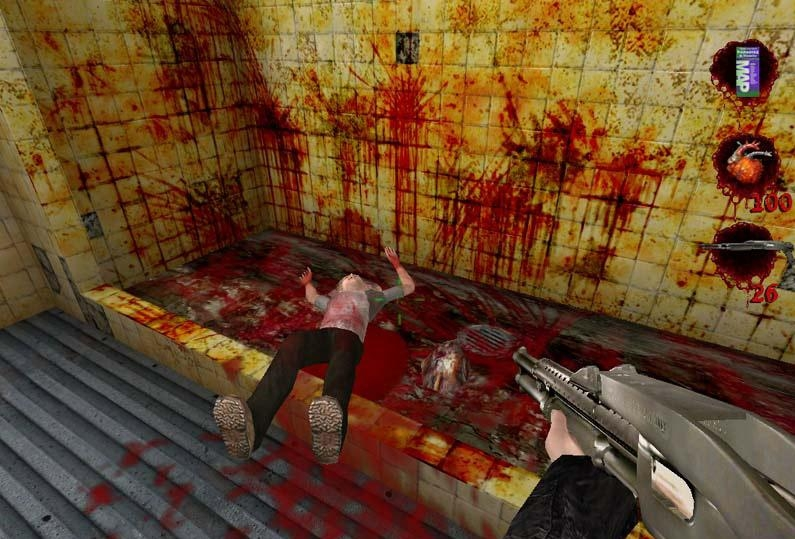

ถ้าพูดถึงวีดีโอเกม เชื่อว่าคนส่วนใหญ่น่าจะคิดถึงความสนุกสนานจากการได้เล่นเกม แต่เชื่อไหมว่าช่วงเวลาที่ผ่านมาหลายสิบปี กับวงการเกม มีเรื่องในแง่ลบที่เป็นเรื่องฉาวโฉ่เกิดขึ้นมากมาย จึงลองคัดเลือกมา 10 เรื่องให้ผู้อ่านช่วยพิจารณา และสามารถเพิ่มเติมได้หากคิดว่ามีเรื่องไหนที่จะติด 1 ในเรื่องฉาวตลอดกาลของวงการเกม
อันดับ 10 เกม 25 to life(2006)

เป็นเกมจากค่ายไอดอส เนื้อหาของเกม "25 to life" เกี่ยวข้องกับนักค้ายาเสพติดในชื่อที่ชื่อ "ฟรีซ" ซึ่งเข้าร่วมแก๊งค์อาชญากร และต่อสู้กับเจ้าหน้าที่ตำรวจ, จับพลเมืองเป็นตัวประกัน และฆ่าศัตรูของกลุ่ม แน่นอนว่าเนื้อหาความรุนแรง และไม่เคารพต่อกฏหมาย และเชิงต่อต้านตำรวจขนาดนี้ใครจะยอม ทั้งนักการเมืองและเหล่าตำรวจออกโรงมาต่อต้านเกมนี้อย่างเต็มที่ ซึ่งมีหลายประเทศนี้ห้ามเกมนี้วางจำหน่ายแล้ว
อันดับ 9 Hot Coffee จากเกม Grand Theft Auto: San Andreas (2005)

แค่เกม Grand Theft Auto: San Andreas สังคมก็ออกมาด่าแล้ว เกมในซีรี่ส์ Grand Theft Auto หรือที่เราคุ้นหูว่า GTA นั้น เป็นเกมที่โด่งดังมากทั้งเรื่องความสนุกของเกมและเรื่องของเนื้อเรื่องในเกมที่เน้นไปในทางไม่ดีเป็นหลัก โดยเฉพาะภาคที่ใช้ชื่อว่า Grand Theft Auto: San Andreas โดยตัวละครอย่างเจ้าม็อดหื่น "ฮอท คอฟฟี่" เป็นอีกหนึ่งข่าวที่ผู้จัดการเกมตามติดในช่วงที่เรื่องนี้แดงออกมา เรียกว่าเป็นความพิเรนทร์ของผู้พัฒนาเกมจากค่ายร็อคสตาร์ ค่ายที่ชอบทำเกมต่อต้านสังคม ที่แอบเอาฉากร่วมเพศแบบโจ๋งครึ่มไปใส่ไว้ในเกม Grand Theft Auto: San Andreas ซึ่งจะเล่นฉากดังกล่าวได้ก็ต้องใช้ม็อด "ฮอท คอฟฟี่" มาใช้ถึงจะเข้าไปเล่นได้ งานนี้ทำเอาค่ายร็อคสตาร์อ่วมไปกับการจัดเรทเกมนี้ใหม่ ให้เป็นเรทเฉพาะผู้ใหญ่
อันดับ 8 Bully (2006

ว่าด้วยเรื่องเด็กชายไฮ-ผม ซึ่งมีเนื้อหาอ่อนไหวและปลุกปั่นเด็กที่เป็นอันธพาลของโรงเรียน แถมมีฉากจูบระหว่างตัวเอกคือ Jimmy Hopkins กับเด็กชายคนอื่น ทำให้ทนายยื่นฟ้องขอให้เก็บเกม Bully ออกจากการวางจำหน่าย แต่คำร้องไม่เป็นผลและ Bully ก็ฮิตติดลมบนไปเรียบร้อย.แถมยังถูกขนานนามว่าเป็นเกมที่ได้ถอดแบบมาจากเหตุการณ์สังหารหมู่ที่มหาวิทยาลัย Columbine อีกด้วย
อันดับ 7 SimCopter (1996)

เกมนี้ดูจะค่อนข้างเก่าบนเครื่องพีซี เนื้อหาเป็นแนวการสร้างเมืองโดยมีเฮลิคอปเตอร์เป็นธีมหลัก แต่นักพัฒนาเกมที่เป็นเพศ "เกย์" ชื่อนายฌาร์ก เซอร์วิน รู้สึกว่าถูกบริษัทเอาเปรียบ เช่น ทำงานเกินเวลา เลยดัดแปลงโค้ดของเกมก่อนนำออกจำหน่าย ให้มีภาพเทวดาเปลือยอกกอด-จูบกัน ผลก็คือเกมขายระเบิดเถิดเทิง แต่นายฌาร์กถูกไล่ออกไปในที่สุดและถูกถอดฉากจูบกันออกในที่สุด
อันดับ 6 แมนฮันท์ 2 (2007)

ถ้าพูดถึงเกมโหด หลายคนอาจจะนึกถึงซีรีย์ Grand theft auto เป็นอันดับแรก ผมอยากให้คุณนึกถึงซีรีย์ "แมนฮันท์" หรือภาษาไทยว่า “พรานล่ามนุษย์” เป็นเกมที่ 2 เพราะเกมนี้ ก็โหดไม่แพ้กันและผลิตจากบริษัทเดียวกันคือร็อคสตาร์ ซึ่งได้ชื่อว่าเป็นบริษัทที่ผลิตเกมวิดีโอที่ขายความรุนแรง บางทีอาจจะโหดกว่าด้วยซ้ำจากการฆ่าที่มีให้เลือกหลายรูปแบบ สำหรับภาคที่ 2 ของเกมนี้ก็เจอแบนไปแล้วในอังกฤษ ประเทศนิวซีแลนด์เมื่อปี 2004 ส่วนที่อเมริกาก็ให้เรทสูงสุด สำหรับผู้ใหญ่(AO-Adult only) งานนี้เรียกว่าขายไม่ออกแน่ ต้นสังกัดร็อคสตาร์เลยเก็บเกมไปก่อนชั่วคราว
อันดับ 5 Postal (1997


ถูกฟ้องทันทีจากเนื้อหาของเกมที่พาดพิงถึงการฆาตกรรมของพนักงานไปรษณีย์สหรัฐฯ ในช่วงยุค 80 และ 90 แม้จะนำเสนอในรูปแบบของตัวการ์ตูน แต่ ไปรษณีย์สหรัฐฯหาได้ปลื้มไม่ ฟ้องผู้ผลิตกะให้หมดตัว ถึงกระนั้น Postal ก็สามารถยืนหยัดมีภาคต่อออกมา แถมมีทำเป็นหนังอีกต่างหาก
อันดับ 4 มัธยมโคลัมไบน์(1999)

Doom เกมม้ามืดที่ถูกดาวน์โหลดสูงที่สุดในยุคนั้น พร้อมกับการถูกโจมตีจากกลุ่มคลั่งศาสนาในเรื่องความรุนแรงและลัทธิซาตาน แต่ นั่นก็ไม่ฮือฮาเท่าเหตุการณ์สังหารหมู่ในโรงเรียนมัธยมโคลัมไบน์ สืบไปสืบมาปรากฏว่าสองผู้ก่อเหตุ Dylan Harris และ Eric Klebold เป็นแฟนเกมชู้ตติ้ง "Doom" ซะงั้น งานนี้ก็เลยโยงพฤติกรรมฆ่าหมู่เข้ากับเกมเรียบร้อย จนช่วงนั้นเกมรุนแรงก็ตกเป็นกระแสต่อต้านอย่างหนัก แถมในปี 2006 "แดนนี่ เลดอนเน" พยายามจะใช้เกม Super Columbine Massacre RPG มาตอกย้ำให้ระกำใจอีก
อันดับ 3 Resistance: Fall of Man (2007)

เพิ่งเกิดไปไม่นานนี้เองสำหรับเหตุฉาวที่เกี่ยวข้องกับเกมชู้ตติ้งเลือดสาด "Resistance: Fall of Man" เมื่อฉากบางส่วนของเกมนี้ดันไปจำลองจากโบสถ์ "แมนเชสเตอร์ คาธีดรอล"(Manchester Cathedral) ในประเทศอังกฤษ งานนี้เรียกว่าไปลบหลู่สถานที่ที่มีคนนับถือ กลุ่มพระในอังกฤษจึงออกโรงมาต่อต้าน นอกจากนั้นยังได้แรงหนุนจาก "โทนี่ แบลร์" อดีตนายกรัฐมนตรีด้วย สุดท้ายโซนี่ในฐานะผู้ผลิตเกมก็ต้องออกโรงมาขอโทษอย่างเป็นทางการผ่านหน้าหนังสือพิมพ์
อันดับ 2 BioShock(2007)

BioShock ถึงจะได้รับรางวัลมากมายก็จริง แต่ เนื้อหาของเกมที่เข้มข้นเกิน โดย เฉพาะการเลือกจะฆ่าหรือไม่ฆ่าเด็กหญิงตัวเล็กๆ ทำให้เกมถูกวิพากษ์-วิจารณ์ในวงกว้างเกี่ยวกับคำถามทางศีลธรรม เป็นเกมที่เลวมากแค่ดูภาษาก้รู้แล้ว พูดง่ายๆก็คือคุณบางคนอาจจะไม่กล้าแตะมันเลย
อันดับ 1 Night Trap (1992)

เป็นเกมรุนแรงในยุคแรกๆ เนื้อหาของเกมที่ว่าด้วยเรื่องราวการเอาตัวรอดของนักเรียนหญิงจากแวมไพร์ ก็ได้กลายเป็นปัจจัยที่ทำให้เกิดระบบเซ็นเซอร์เกมในวันนี้ โดยวุฒิสภาสมัยนั้นให้คำจำกัดความ Night Trap ว่าวิตถารและน่าอับอาย แถมยังบอกว่าเกมไปกระตุ้นให้ผู้เล่นอยากไล่ล่าและฆ่าคนอื่น ทั้งที่จริงแล้วผู้เล่นพยายามไล่ฆ่าแวมไพร์ต่างหาก นอกจากนี้ Night Trap เป็นเกมแรกในประวัติศาสตร์ที่เป็นชนวนให้เกิด 2 องค์กรได้แก่ ESA-Entertainment Software Association สมาคมอุตสาหกรรมซอฟท์แวร์และ ESRB หน่วยงานที่ให้ตรวจสอบเนื้อหาเกมและให้เรทติ้งเกม + +
นี่คือการจัดอันดับตามจริงทั้งหมด